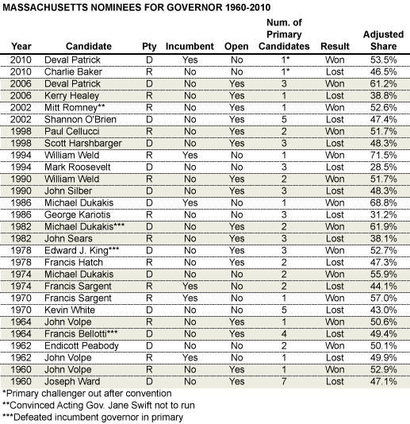
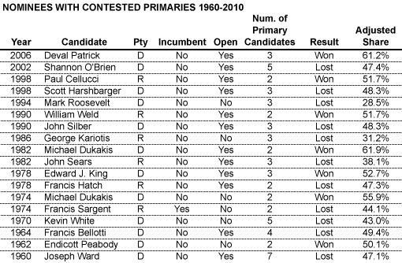
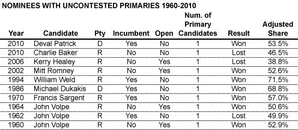
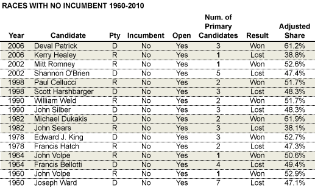

Do contested primaries help or hurt candidates for governor in Massachusetts?
Originally published on the Mass. Numbers Blogger site on 2012-11-26.
Republicans have seen success limiting primary fights
Governor Deval Patrick has said that he will not run for a third term, meaning Massachusetts will have a wide-open race for Governor in 2014. Lieutenant Governor Tim Murray and Treasurer Steve Grossman have indicated they are thinking about running for the Democratic nomination, and there is speculation that former Republican gubernatorial nominee Charlie Baker may throw his hat into the ring for a second time. History shows that there will be more candidates putting their names in and out of contention before the final decision is made by the voters on November 4, 2014.
How does the number of candidates in a party’s primary affect its nominee’s performance in the general election? Massachusetts Democratic Party leader John Walsh is on the record as saying that he likes contested primaries because the party benefits from the competition. Others say that a contentious primary weakens the eventual nominee and reduces the chances of a general election win. Which of these notions is borne out by the facts? I try to shed some light on the matter by examining the performance of Democratic and Republican nominees for Massachusetts Governor since 1960.
For the purposes of this article I will not focus on independent candidates (who never have a primary), or third-party candidates who normally don’t have competitive primaries. While it may not hold forever, only Republicans and Democrats have been elected Governor of Massachusetts since 1858 when Republican Nathaniel Banks replaced Henry Gardner of the Know-Nothing Party.
In order to make comparisons between the percentage of the vote won by a candidate in a general election race that might have a variable number of independent and third-party candidates, I use the column Adjusted Share. The Adjusted Share is calculated by adding up the total number of votes for the Democratic and Republican candidates together, and then calculating the percentage of the two-way total won by the individual candidate in that row.
In the 14 races for Massachusetts Governor from 1960 until 2010, Democrats and Republicans are tied with 7 wins a piece:

In the next two tables I break down the list of races into a list of candidates with contested primaries, and a list of candidates with uncontested primaries, so we can compare their rates of success. The following table shows the 18 individual candidates that had a contested primary. Of those nominees, 7 were winners (39%) and 11 were losers (61%).

The next table shows the 10 individual candidates that had uncontested primaries. In this group 7 were winners (70%) and 3 were losers (30%)—a much higher success rate. It is interesting to note that in the 50 years from 1960 to 2010, only 2 Democratic nominees for Massachusetts Governor have had uncontested primaries: Michael Dukakis in 1986 and Deval Patrick in 2010, both incumbents.

The 39% success rate for nominees with contested primaries versus the 70% success rate for uncontested nominees provides some evidence that contested primaries might be a disadvantage for a nominee in the general election. However, a large percentage (50%) of the uncontested nominees were incumbent governors which might provide its own advantage. It is worth looking specifically at the open races where there was no incumbent in the general election, also mirroring the situation we have for the 2014 race.

When looking at the 8 races since 1960 with no incumbent, there were 4 candidates who were nominated without a contested primary, listed with a bold 1 in this table. Of those 4, the only one to lose the general election was Lieutenant Governor Kerry Healey who was defeated in the 2006 general election by Deval Patrick. The other 3 uncontested candidates (John Volpe appears uncontested twice and Mitt Romney once) were winners, giving a 75% success rate for candidates with uncontested primaries in open races. The 12 nominees in the list with contested primaries won 42% of the time, a much lower rate than the 75% success rate for the 4 uncontested nominees. Also notable: all of the uncontested nominees in open races were Republicans.
Analysis
I have shown that candidates with uncontested primaries have seen more success in Massachusetts gubernatorial elections since 1960, but are contested primaries a cause or an effect? Do uncontested primaries increase the chance of general election success, or do weak candidates attract primary challengers? Or is the perceived advantage of an uncontested primary due to statistical noise? While the very small sample size makes it difficult to find a statistical correlation between contested primaries and general election success, it does make it possible to look at the specifics of the 8 open races and come to the following conclusions.
Republicans are often able to avoid contested primaries
The most notable thing about this list of open gubernatorial races is that all four of the candidates with uncontested primaries are Republicans. There is a strong tendency for the Massachusetts Republican Party to identify the candidate who is next in line, so to speak, and to coalesce around and defend that candidate from possible challenges. The most striking instance of this is Mitt Romney’s ability to work behind the scenes with Massachusetts Republican Chairperson Kerry Healy to convince Acting Governor Jane Swift to defer to his candidacy for Governor in 2002. It became clear after the fact that an incredible amount of pressure was put on Acting Governor Swift to not run for governor because of her perceived weakness as a candidate.
The Republican strategy has seen fairly strong success, with a 75% win rate in open races. The one failure was the 2006 loss of Kerry Healey to Deval Patrick. It is possible that Healey was hurt when prospective Republican candidate Christy Mihos—encouraged by the party establishment to not run for the Republican nomination—decided to run as an independent. In addition, Deval Patrick ran a very strong grass roots campaign and Healey was unable to make a large enough dent in Patrick’s lead by going negative late in the campaign. Even with Healey’s loss, it is hard to argue with a 75% success rate.
Democrats rarely avoid contested primaries
In the 50 years from 1960 to 2010 there have only been two uncontested Democratic primaries for Governor: incumbent Governor Michael Dukakis in 1986 and incumbent Governor Deval Patrick in 2010. Even though Patrick officially avoided another Democratic on the primary ballot in 2010, Gale Ross challenged Deval Patrick for the nomination, and only dropped out after not receiving 15% of the vote at the Democratic Nominating Convention.
As a further indicator of the inevitability of multi-candidate Democratic gubernatorial primary races, it is worth noting that 3 of the 8 races that show up in the Races with No Incumbents table were actually situations where the incumbent Democratic governor was challenged and defeated in the primary!
In 1964 Francis Bellotti defeated incumbent Governor Endicott Peabody in the Democratic primary and went on to lose to Republican nominee John Volpe.
In 1978 Edward J. King defeated incumbent Governor Michael Dukakis in the Democratic primary and went on to win against Republican nominee Francis Hatch.
In the next election in 1982 former Governor Michael Dukakis defeated incumbent Governor Edward J. King in the Democratic primary and went on to win back the governorship against Republican nominee John Sears.
Conclusion
Based on history and the current political tea leaves, it is almost certain that there will be a contested primary in 2014 for the Democratic nominee for Massachusetts Governor. Given this inevitability, it is not surprising that Democratic leaders indicate a desire for a contested, but clean and issue-based primary race. It would not be unprecedented or surprising if the Massachusetts Republican Party identifies its chosen candidate and successfully maneuvers to make sure that the chosen Republican is uncontested in the primary, and this would seem to provide them with a better—but not assured—chances of success in the general election. That being said, the Massachusetts Republican party is in a state of disarray after major losses in the 2010 and 2012 statewide elections and they may not have the unity to successfully anoint a gubernatorial nominee without a primary fight.